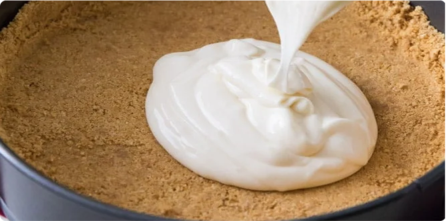
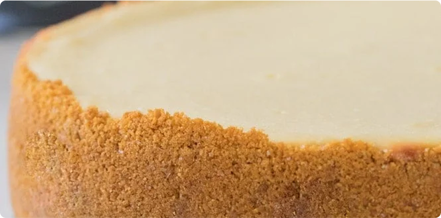

For a recipe with so few ingredients (cream cheese, eggs, sugar,
sour cream, vanilla & salt), it took a lot longer than you might
think to develop the perfect version. I’ve shared a few cheesecake
variations in the past but getting a perfected classic version took
lots of testing. Finally, here we are.
-
Use room temperature ingredients: It’s important that your cream
cheese comes to room temperature before you begin making your
cheesecake. This will prevent any lumps and ensure a cheesecake
with a smooth, creamy texture. However, to ensure that all of your
ingredients blend together nicely and give you the desired result,
they should all be at room temperature before you begin.
-
Take it easy on the eggs: Over-beating your eggs is one of the
quickest ways to ruin a cheesecake. Over-beating can ruin the
texture and can cause cracks. To prevent this, lightly scramble
each egg before adding it into your batter. Keep your mixer on low
speed and stir until just combined. Be sure to pause after each
addition and scrape down the sides and bottom of your mixing bowl.

-
Don’t open the oven: I know how tempting it can be to want to
check on your perfect, beautiful cheesecake, but wait until it’s
finished baking (or close to it) before opening the oven door!
Yes, you will have to test for doneness at some point and there’s
a real possibility it will need more time in the oven, but
minimize opening the oven as much as possible.Opening the oven
door can drastically reduce the temperature of your oven, which
will slow the baking process and might cause your cheesecake to
sink or crack.
-
Free your crust!: Once your cheesecake is done baking, allow it to
cool for 10 minutes on top of the stove. Then, run a knife around
the inside of the springform pan to loosen the crust from the
sides.
-
Cool at room temperature before moving to the fridge: I always let
my cheesecake come to room temperature before chilling. For bests
results, let it cool as gradually as possible. I put mine on top
of my oven (the warmest spot in my house) so it can gradually cool
off as the oven does. This pre-chilling cooling period can take an
hour or two, but it’s worth it. An abrupt temperature change
(moving the cheesecake directly from oven to fridge) is likely to
make it crack.
